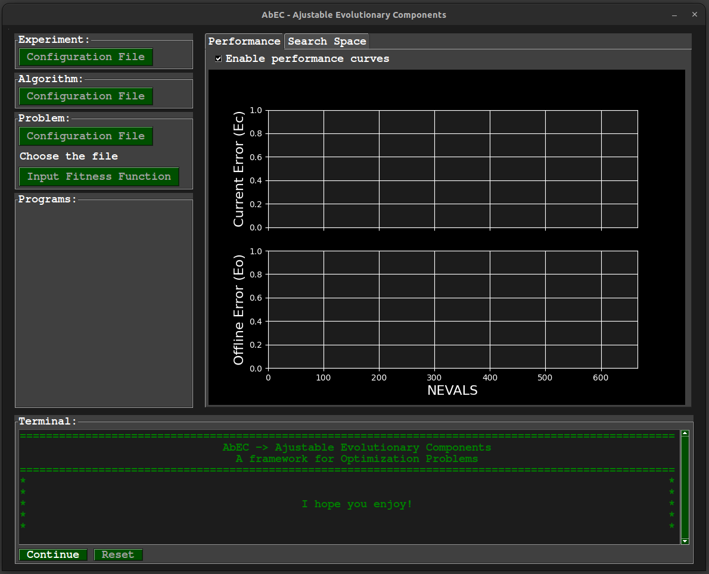
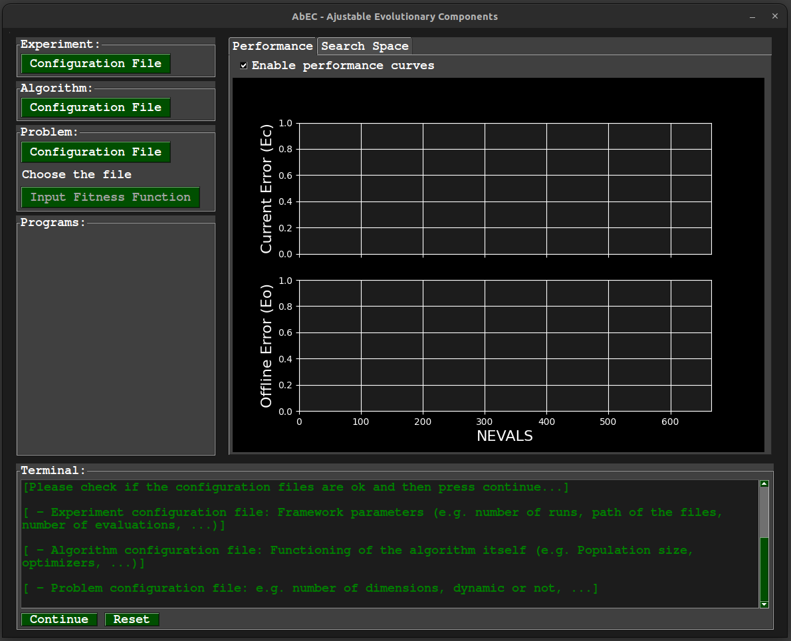
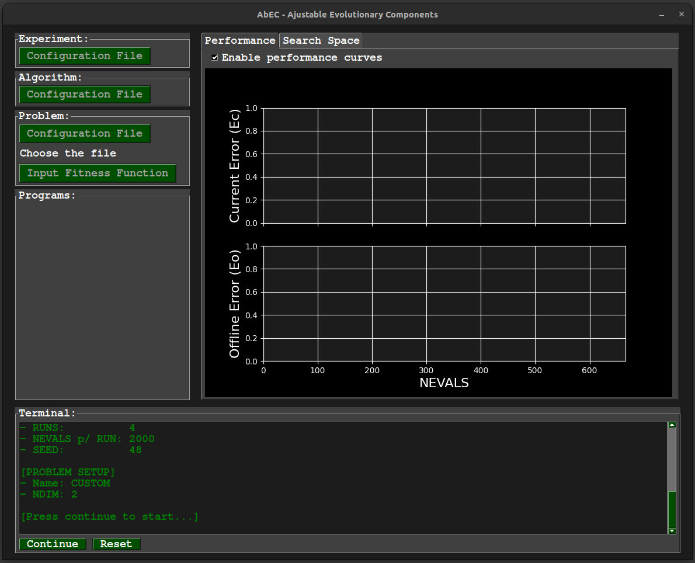
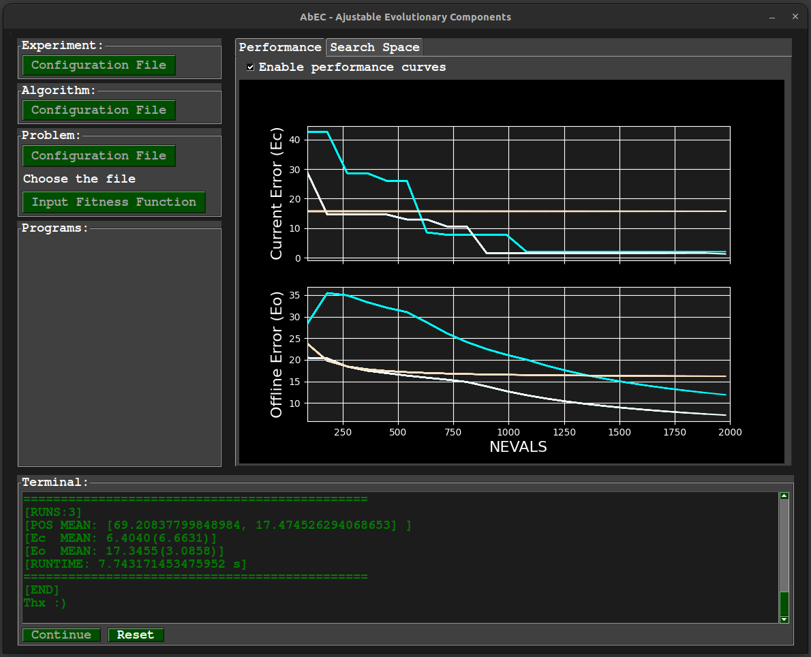

As said before there are two ways to run the framework, through the graphical interface and via the command line. Lets see first how to use via graphical interface and then via command line
> Running via graphical interface
This is most straightfoward way to use the framework, once the interface was made to be most intuitive as possible. So, to run the framework we need to run the app.sh script which is localted on Abec/abec dir. So,
use the following command:
$ ./app.sh
And then the window of the application will be opened as follows:

In the terminal located in the below part of the window there is a step-by-step to follow in order to configure and properly the framework. But lets take a look in a brief description of the buttons:
- Experiment: Configuration file: Open the frameConfig.ini file in the default text editor.
- Algorithm: Configuration file: Open the algoConfig.ini file in the default text editor.
- Problem: Configuration file: Open the problemConfig.ini file in the default text editor.
- Continue: Used to advence to the next step.
- Reset: Restart the process from the begin.
We have also in the right side two tabs used to display the progress of the optimization process, it is a good alternative to have a preview of how the algorithm is performing. In these tabs we can enable/disable the corresponding graphic to be done.
The graphical options are:
- Performance In this tab is displayed two performance curves, which represents two metrics used in the framework, the Current error and the Offline error.
It is enabled by default.
- Search Space This one displays how the population (individuals) are spread out in the search space (so far, for problems with more than 2 dimensions it is used the
"fisrt" two dimension to represent). It is disabled by default.
It is important to have in mind that the use of these features slow down the optimization process, mainly the search space feature. So you can for example, enable them for a brief moment during the optimization process
to take a look how it is going and disable.
By clicking on the continue button come to the first step of the configuration.
>> Step 1 - Configuration files
Now the configuration files buttons are enables and in this step we need to set up them by clicking on the respective button:

Once the configuration files are set up, press the continue button.
>>> Step 1.1 - Problem configuration file
If you choose the "CUSTOM" option in the problem configuration file, that means you are not going to use a benchmark problem and want
use use your own fitness function file. So, in this moment you need to upload the file by clicking in the "Input Fitness Function" button.
And then, press the continue button.
>>> Step 2 - Reviewing the configuration
With the configuration files all set up, in this step is showed in the terminal a summary of the configurations. So it is time to take a look and see if it is
everything as expected with the configuration.

If is everything ok press continue, if not press reset and restart the from the step 1.
>>> Step 3 - Checking the results
If you pressed continue in the step 2, the optimaztion process will start. After the process finish, it will be showed in the terminal the results.

Check it and if you want to redo the experiment or do any other experiment just press the reset button and we come back to the step 1.
> Running via command line
We have also the option to run the framework whitout the graphical interface, directly on the terminal. To do that we just need to include the parameter "-i 0" after the command to run the framework in order to
not initialize the interface.
We just need to have in mind that if we are running via command line, it is needed to set the configuration files beforehand, beucase once we run the commando to run the framework the optimization process will start
directly. The commando then becomes:
$ ./app.sh -i 0
However, during the experiments it may be convenient to have the files of different configurations
(instances) of the algorithms in specific directories.
Therefore, it is possible to specify the path where the configuration files are located, and this becomes the default path during the execution of the algorithm. To do so, just add the
-p argument when calling the framework script, like this:
$ ./app.sh -i 0 -p PATH
* This also works in the same way for the graphical interface mode